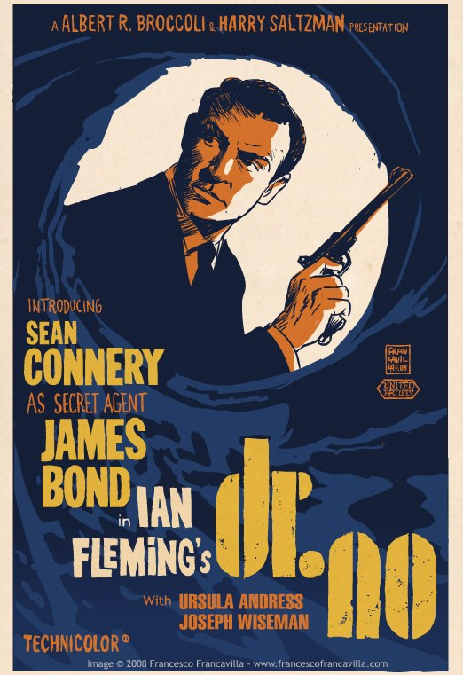

In this time period, the use of editing, backdrops, and more helped come near to the time films were becoming popular. Because of editing, directors were given the opportunity to perfect their material by changing or redoing scenes. Around the year 1905, an inexpensive way to view movies was created - the 5 cent movie theatre. The period of time in which these theatres were built was called the Nickelodeon era, due to the cost of 5 cents for viewing. Later on in the 1900s, they learned how to put color in their films. A lot of the films made in the 1900s have been based on the war from the 40s, to the fashion from the 50s, to rock n' roll from the 60's. Even after all that, the classic films dont stay popular forever. The movie industry had their own depression because the films always revolved around tradtional genres, so they changed the movies adding special effects to get peoples attention, mainly the younger age. The 1900s was a great discovery for films.
The 1900s


